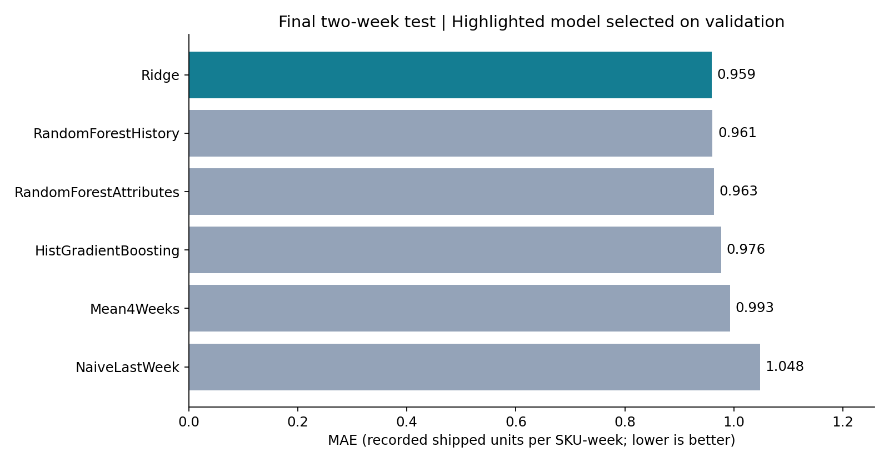
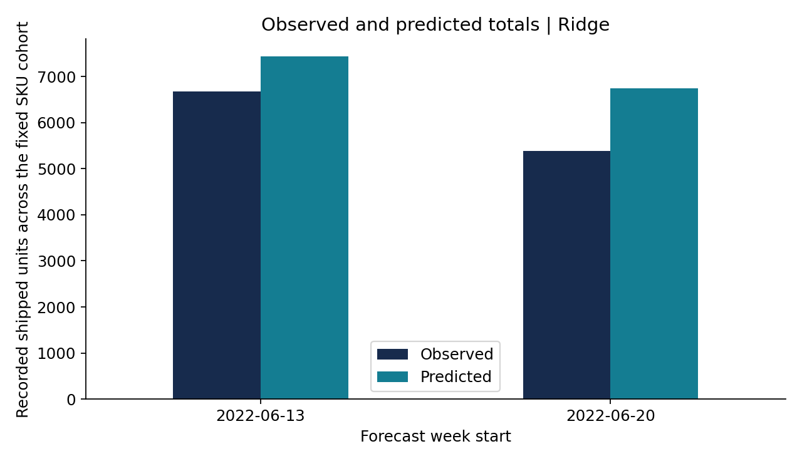
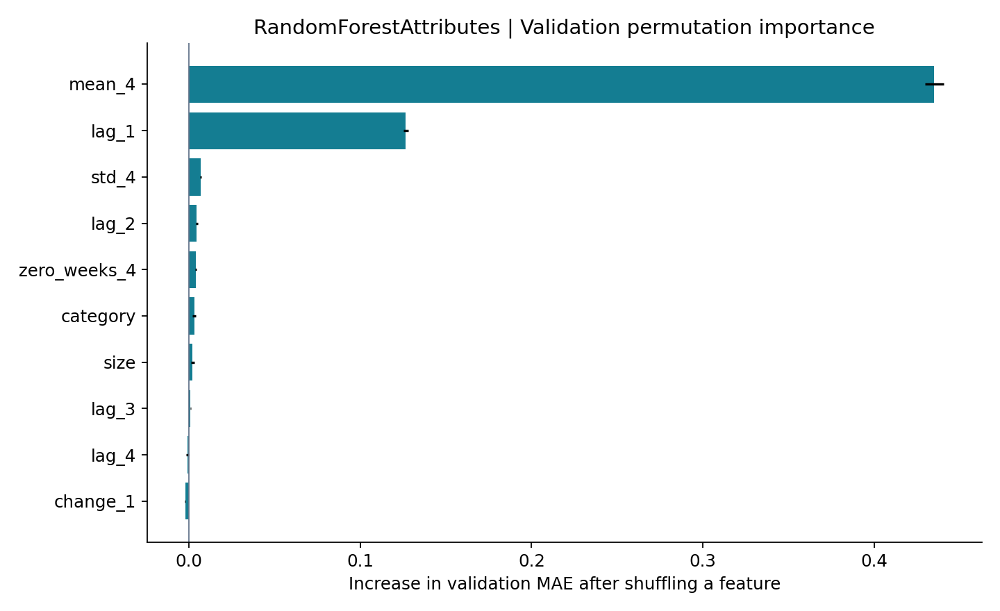

PROGRESS REVIEW 2 / MODEL BUILDING AND TESTING
Open stock replenishment review
Forecasting component: evaluation
Historical experiment using twelve complete weeks, a fixed cohort of 5,615 SKUs, and one-week-ahead predictions. All quantities are recorded shipped units, not unconstrained customer demand.
Selected on validation: Ridge. Test weeks start 13 and 20 June 2022. Models are frozen before both test weeks; each forecast uses observations available through the preceding Sunday.
Test MAE0.959
Test RMSE1.845
Test WAPE89.3%
Measured model comparison
Validation weeks: 30 May and 6 June. Model selection uses validation MAE, then RMSE for ties. Test scores are reported without changing the selection. WAPE is an error measure, not accuracy.


Feature check
Permutation importance is computed on validation data for RandomForestAttributes. It measures predictive reliance, not causation. Negative values can occur.

Scope and limitations
- No transaction in a week means zero recorded shipped units; availability and lost demand are unknown.
- Before first observation, zero denotes no recorded sales, not proof that a product was listed.
- Fixed cohort contains SKUs seen in the initial four weeks, including cancelled-only items; new products are excluded.
- Final order statuses are retrospective snapshot labels; event-time status history is unavailable.
- Stock is undated and never used as a historical model predictor or a validated current balance.
- Category and size are first observed pre-cutoff attributes; subsequent attribute changes are not modelled.
- Only twelve complete weeks and two final test weeks are available; no annual seasonality or deployment claims.
- Data appears to concern Amazon India; Sri Lankan retailer applicability has not been validated.
- Original data publisher and reuse licence must be verified before external redistribution.
Files
Stock snapshot values are not model inputs. Reorder scenarios are assumptions, not evaluated optimal inventory policies. No measured profit improvement is claimed.